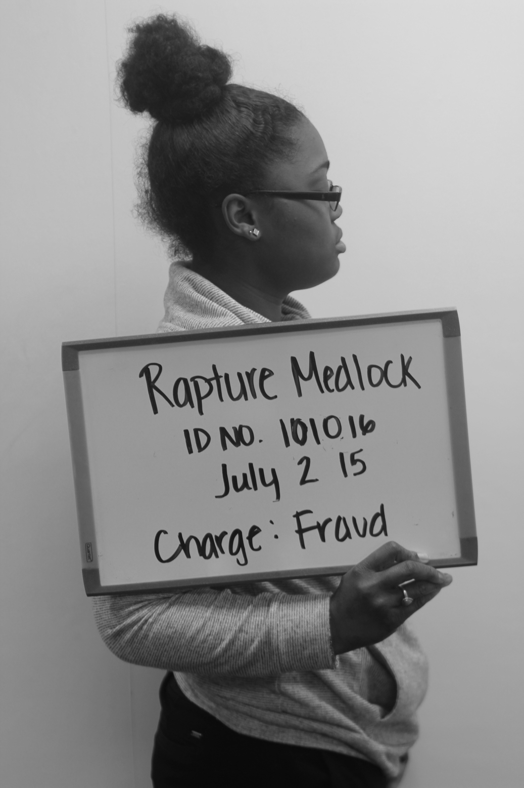

Rapture Medlock

Rapture is a Class 10, Year Up trainee. Her career focus is being an owner of her own business. She applied to Year Up so that she could get training on how to work better with computers. Most importantly, to gain knowledge in order to apply her skills to her future career.
She currently resigns in the city of Chicago. A place where she has always lived and loved. She attended and graduated from high-school and college. Her intended field of study is Business but she wants to double major in Business and Computers.
Rapture began to become interested in technology since she was old enough to touch electricity. She has always been a demanding young lady. Her mother can attest to that. In the future, Rapture wants to own her own business dealing with computers. Her motivation came from seeing her father and how his business has flourished.